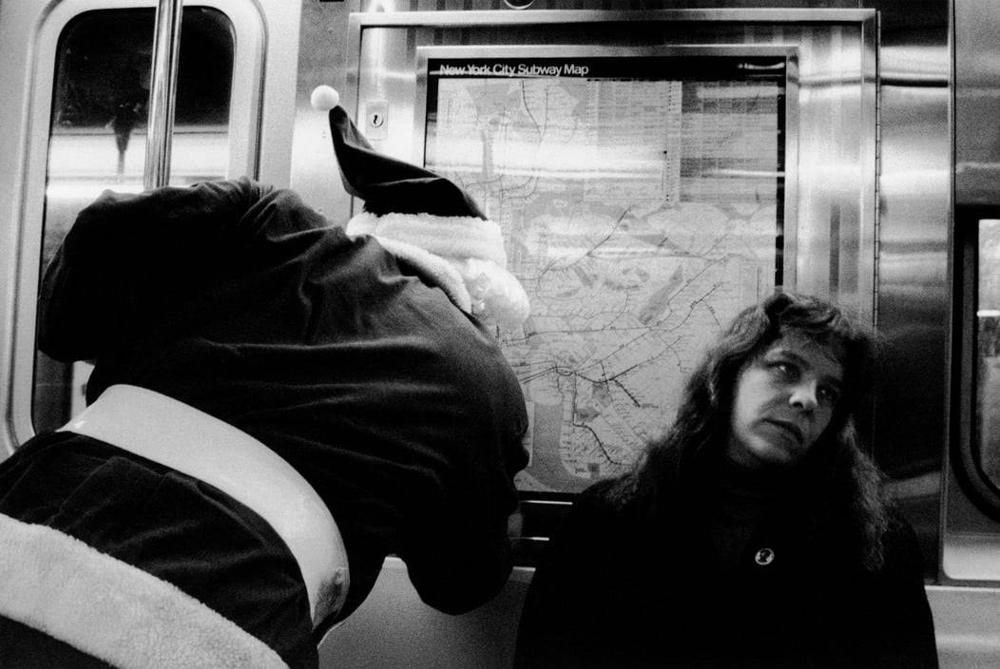
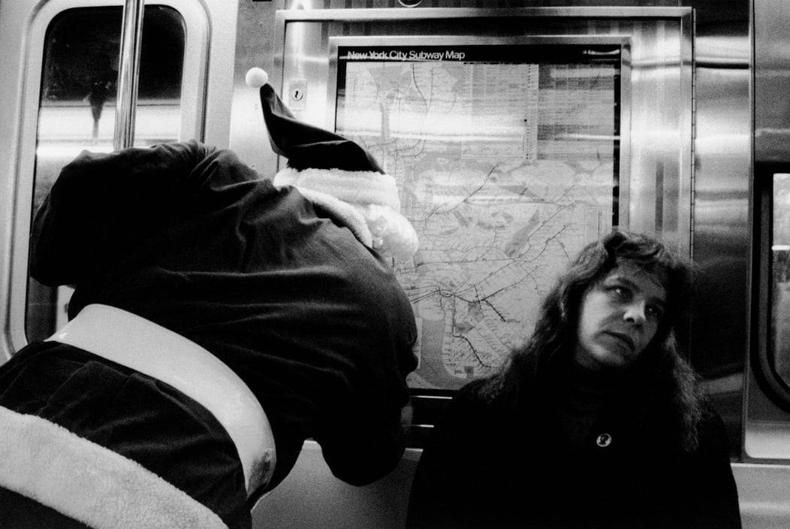
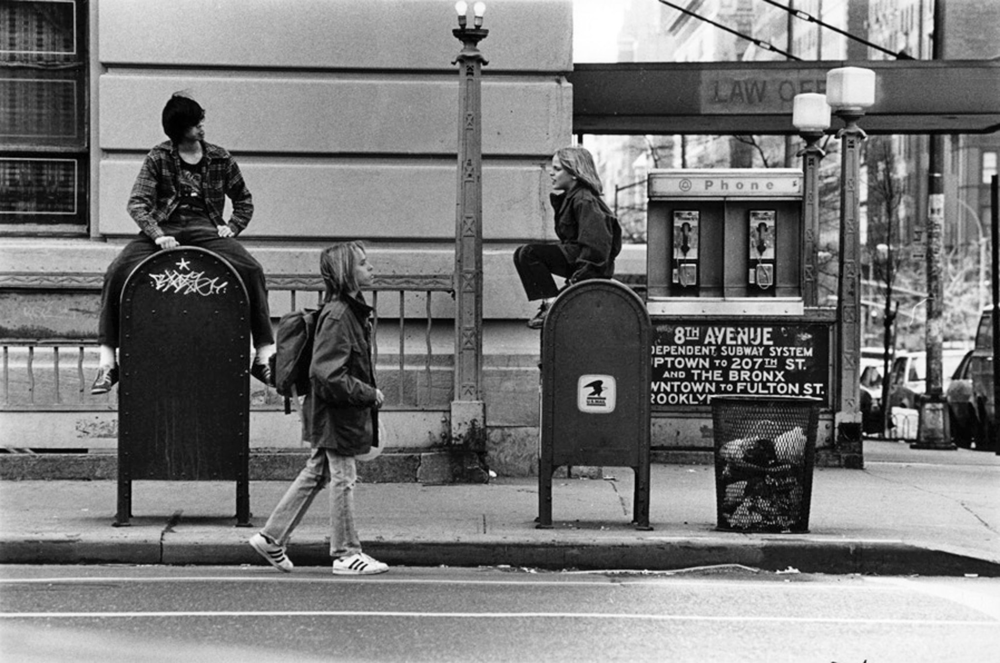
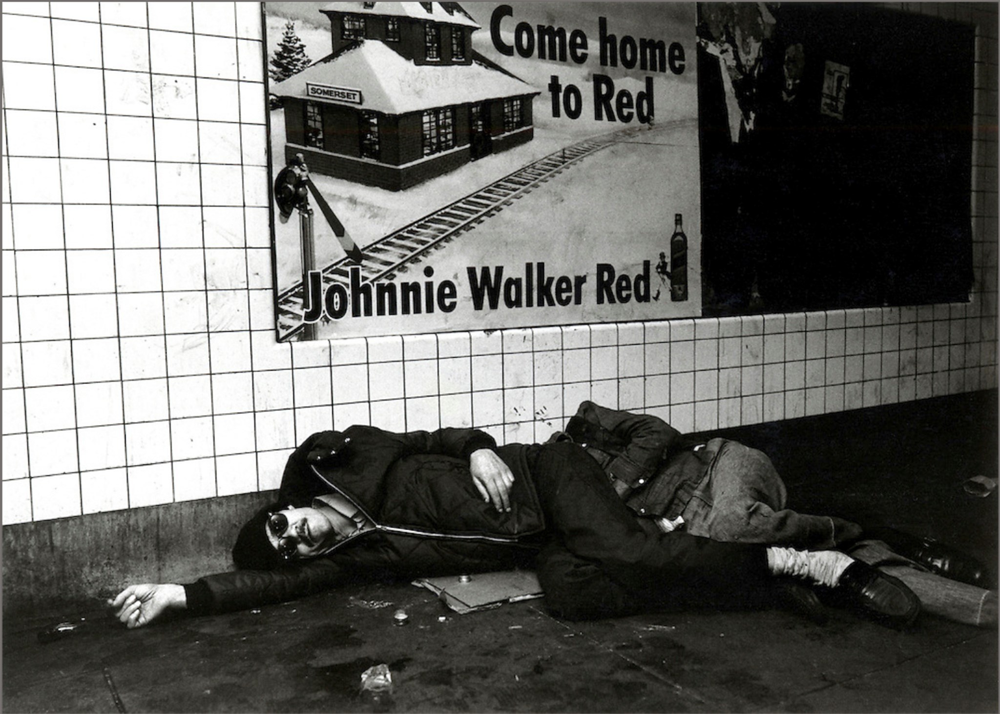
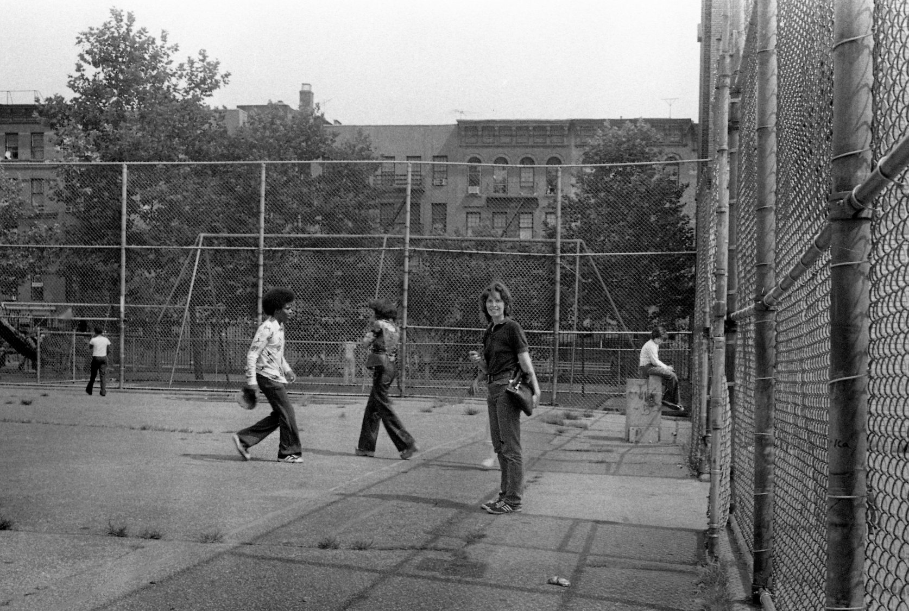

Santa needs a little direction…

Santa needs a little direction…

Christmas on the Upper West Side, 1960s


Will Smith & Daddy-O standing outside Def Jam Records and Rush management office at 298 Elizabeth St, New York (1988)

Central Park West at 86th Street, 1981
Playground of I.S. 44, 1976. I got mugged there a lot.

Posing at 106th and Park Ave, 1983

They came home to Red.

Can you tell me how to get to 105th and Amsterdam?

Brooklyn Navy Yards, 1980s

I’m no bible scholar, but I’m pretty sure Jesus never said anything about the senator’s daughter.
Too bad it’s in Miami, but how cool is this!

Ferdinando Scianna Central Park, New York City 1985

PS 198, 1975